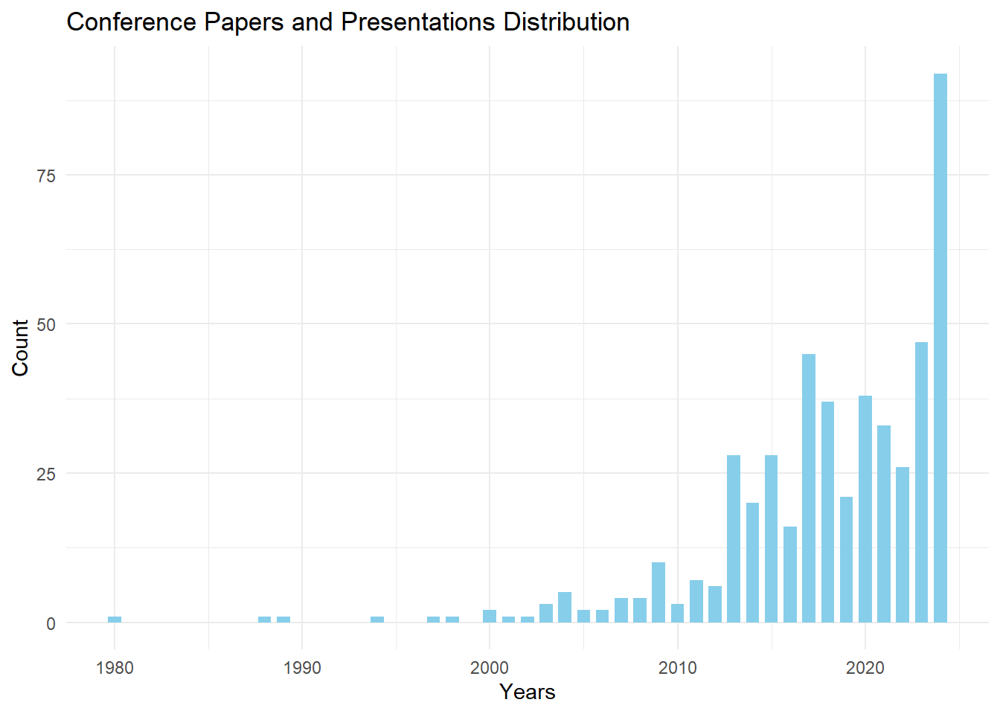
Almost 50 Years of Academic Research on Tabletop Role-Playing Games
Historical Evolution and Bibliometric Analysis
Pascal Martinolli ![]()
Abstract
This descriptive study offers an in-depth historical and bibliometric analysis of academic research on tabletop role-playing games. It examines the evolution of publications across various academic formats (conferences, monographs, theses, peer-reviewed articles) and explores new trends in scientific dissemination, including preprints and literature reviews. The analysis reveals a marked growth in scientific output since the origins of role-playing games, with a notable acceleration over the past decade. While research remains primarily based in North America and Europe, new hubs are emerging in Latin America and Asia. Several major themes are explored: the dominance of Dungeons & Dragons, the moral panics of the 1980s and 1990s, therapeutic applications, issues of diversity and representation, as well as the phenomenon of actual plays. The study also includes an analysis of theoretical reflections developed by the gaming community outside of traditional academic publications. It examines how these high-quality, para-academic contributions might be integrated and validated by scholarly institutions. Finally, it highlights the influence of academic practices and values, particularly in terms of citation, on role-playing game culture.
Keywords
Tabletop role-playing games ; academic publications ; historical study ; bibliometrical analysis ; scholarly conversation
This translation is to be submitted to a journal. It is a translation of the presentation in French made in the colloquia “Vous êtes dans une taverne…” Retour sur cinquante ans de jeux de rôle (27-28 mars 2024, Metz, Université de Lorraine) that will be published as a chapter in a monograph. The translation relies heavily on Claude 3 Haiku by Anthropic and ChatGPT 4o by OpenAI.
1 Introduction
Since 2014, I have been gathering academic references related to the study of tabletop role-playing games. This endeavor led to the creation of a freely accessible database on Zotero, containing over 3,000 references from academic or para-academic studies.
1.1 Key Highlights
Among the indexed references, there are approximately 630 peer-reviewed articles, 190 monographs, 430 dissertations or theses, and various other types of documents: conference presentations, blog posts, datasets, and more.
The core corpus was built from references obtained through bibliographic research in academic bibliographic databases, library catalogs, citation indexes, institutional repositories, and others. The references matched one or more search equations based on free or controlled terms1. After building the initial corpus, alerts were set up in to automatically detect new references meeting the search criteria2.
The references are collected and edited using the bibliographic software Zotero in a shared, publicly accessible group library3. They are then indexed with subject headings from a two-level controlled keyword thesaurus. I am grateful to Michael Freudenthal, who joined in 2019 to help manage this online database, and to Thomas Munier and Sébastien Delphino, who assisted in designing the thesaurus in 20184.
1.2 Biases
This collection has several significant biases:
Linguistic and Geographic Biases: The majority of references are in English and French, though literature in other languages, such as Spanish, Portuguese, and Italian, is increasingly represented. However, some languages, such as Nordic languages, German, and Chinese, remain underrepresented.
Availability Bias: Theses and dissertations completed before the 2000s are often less indexed in databases, limiting their accessibility.
Indexing Bias: Some references only index the monograph as a whole, while others index both the monograph and its chapters. This creates inconsistencies in how content is referenced.
In summary, this collection suffers from a lack of linguistic and geographic diversity, limited access to older publications, and inconsistent reference indexing. This can lead to blind spots and gaps in the coverage of the research field.
In my view, peer-reviewed journal articles are the least biased document type in this bibliographic collection. This type of literature benefits from more systematic indexing in disciplinary databases, making it possible to conduct a more exhaustive survey. Therefore, comprehensive searches across a large and diverse array of databases lead to a representative corpus of scientific production in this field. Given this corpus’s representativeness, it is reasonable to generalize analyses conducted on these peer-reviewed journal articles.
2 Conference papers
Despite the availability biases mentioned previously and selection biases (I am far from having indexed all conferences on role-playing games), the figure below illustrates a significant increase in conference presentations starting in the 2000s, with an acceleration around 2013–2015. Before 2000, conference presentations are sporadic and rare.
In addition to organizing full colloquia with a series of lectures in an academic setting, there is also notable enthusiasm for individual presentations at events such as conventions and exhibitions.
3 Books and Book Sections
As mentioned earlier, references for monographs (books) suffer from inconsistent chapter indexing. Some books have a single reference for the entire work, while others have both a general reference and individual references for each chapter.
Despite this, from the 2000s onward, there is also a clear increase in the number of monographs with an academic focus on tabletop role-playing games.
Among the major publishers, traditional academic publishing houses are prominent (Springer, Routledge, Wiley, MIT Press, Peter Lang, etc.), along with publishers specializing in game studies (McFarland, ETC Press, Pinkerton Press, etc.) and professional or semi-professional gaming organizations (Ropecon ry, Evil Hat Production, Knutepunkt, etc.).
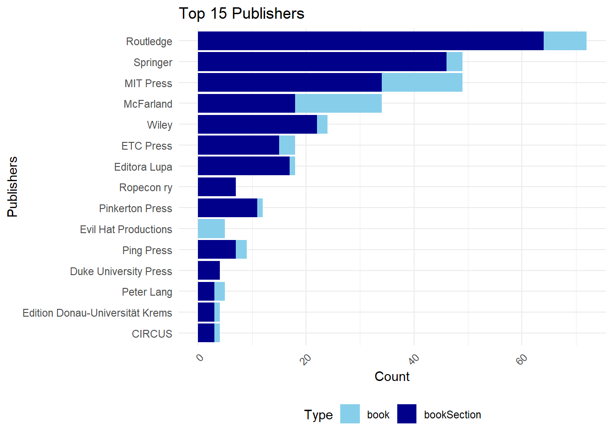
4 Theses and Dissertations
The representativeness of master’s theses and doctoral dissertations exhibits several biases.
On the one hand, master’s theses, as graduate-level works, are difficult to locate online. Due to limited legal requirements (minimal dissemination obligations) and technical constraints (low digital accessibility), approved and accepted theses are rarely visible online. Sometimes, access is facilitated by an institution’s dissemination policy or individual student initiatives, with students publishing their work on personal websites or voluntarily depositing it on platforms. This also applies to undergraduate work, which is even less commonly shared.
On the other hand, locating doctoral dissertations is generally easier. In most countries, dissertations are publicly accessible to some extent, with hosting institutions typically required, at a minimum, to provide a bibliographic reference and maintain at least a printed copy of the accepted dissertation. Bibliographic information may be searchable in institutional repositories, national legal deposits, or specialized databases. However, online-distributed dissertations are often overrepresented, overshadowing those only accessible in print.
With these biases in mind, we can observe a growing number of theses and dissertations on tabletop role-playing games from around 2005–2010 onward. A marked increase since 2013 may correspond with the period when North American and European universities began more systematically disseminating their students’ theses and dissertations in institutional repositories.
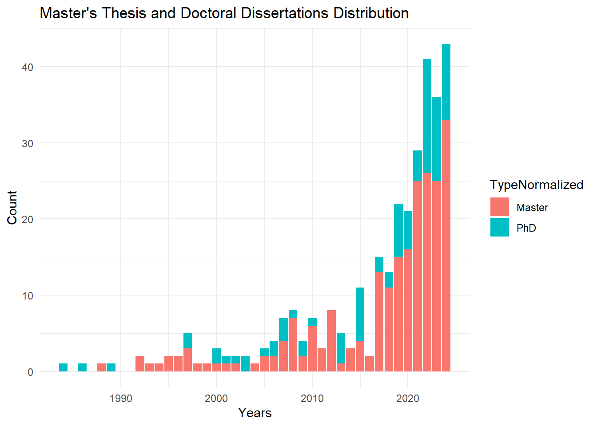
Interestingly, two trends emerge regarding the page count expected of students. Across institutions, the average page count for master’s theses tends to be around 100 pages. In contrast, the length of doctoral dissertations varies significantly between institutions, ranging from about 100 pages to over 300 or even 500 pages, with an average of approximately 240 pages.
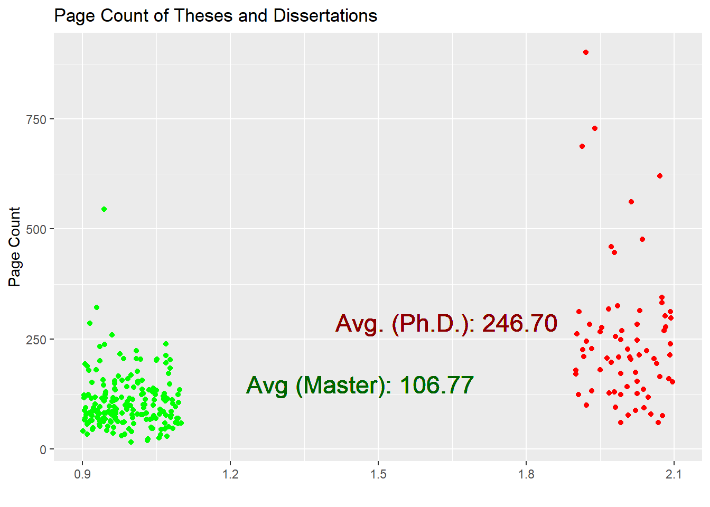
The countries where defenses are most represented5 are predominantly in North America, with the United States leading, followed by Canada. Next are European countries, where France stands out, followed by Brazil and several Northern European countries.
5 Peer-Reviewed Articles
As mentioned earlier, I believe I have collected a representative set of peer-reviewed journal articles, where the content has undergone a selection and revision process overseen by an editor.
5.1 Inclusion Criteria
The core subject or a significant portion of the articles must focus on tabletop role-playing games. Articles about live-action role-playing games are not included a priori (they may be included if they also discuss tabletop role-playing). Articles addressing electronic role-playing games are not included unless the central conversational process involves human interaction (thus, virtual tabletop role-playing or actual play topics are included). Therapeutic or sociodrama role-playing games are included only if the playful dimension is at least partially present. Therefore, short and individual interactions between a therapist and a patient are not included.
Observing the figure below, we note that production was very sporadic in the 1980s. In the 1990s, there was modest production, never exceeding 10 articles per year. Starting in the 2010s, there has been a strong and consistent increase in the number of publications, peaking at 60 to 80 articles per year in the 2020s.
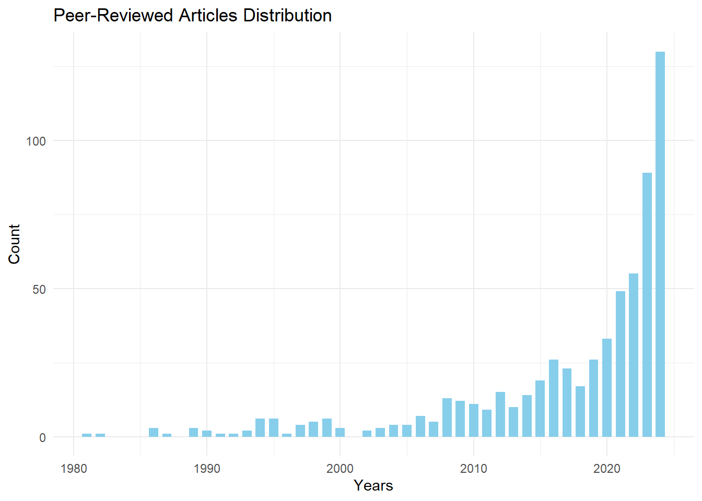
5.2 Explanations
Several reasons can be proposed to explain this increase. First, scientific publication across all academic disciplines has significantly risen during the same period. Indeed, the pressure to publish (the well-known “publish or perish”) encourages researchers to publish quantitatively more than before.
Additionally, a generational effect may be at play in two ways. Firstly, researchers and research leaders (lab directors, research project leaders, journal editors, funding committee members, etc.) may have played role-playing games in their youth and have a positive appreciation for any research that highlights a hobby to which they feel attached. Secondly, a new wave of tabletop role-playing practitioners emerged after 2010. Many role-players became parents and introduced their children to the hobby or reconnected with the practice themselves. Moreover, new players have discovered this leisure activity through popular culture fiction (Stranger Things, The Big Bang Theory) or through recorded and streamed sessions (actual play).
Finally, interesting research angles have generated significant enthusiasm and numerous studies: the use of playful role-playing as a therapeutic tool or as an educational tool, among others.
5.5 Journals
Among the academic journals in which the articles are published, we note that the top four are specialized journals focused on the topic: Analog Game Studies, The International Journal of Role-Playing, The Japanese Journal of Analog Role-Playing Game Studies, and Journal of Roleplaying Studies and STEAM. Following these are academic journals that specialize in game studies more broadly, as well as those that cover the field of psychology.
Although the research is international and the nationality of the publishers is significant, it is notable that most journals are based in the United States. Other countries stand out due to their specialized journals, such as the Netherlands for IJRP, Japan for JJARPG, and Mexico for JRSSTEAM.
5.5.1 Age of the Journals
By subtracting the founding date of the journal from the publication date of the article in that journal, we observe that most articles are published in relatively young journals, specifically those less than fifteen years old. This is primarily due to the fact that the four specialized journals are relatively new. We also observe a long-tail phenomenon illustrating that articles on role-playing games can be published in older journals, even very old ones (with a maximum gap of 166 years for the oldest).
5.6 Languages of the Articles
The primary and dominant language in role-playing game research is English. On one hand, English has become the lingua franca of science, which explains why researchers from minority language backgrounds often choose it to reach a broader audience. On the other hand, the majority of tabletop role-playing games are also published in English.
Warning: le package 'treemapify' a été compilé avec la version R 4.3.3Warning in RColorBrewer::brewer.pal(n, pal): n too large, allowed maximum for palette Set3 is 12
Returning the palette you asked for with that many colors5.6.1 Francophonie
It is interesting to note that the second language of research on role-playing games, after English, is French. This can be attributed to the dynamism of French-speaking researchers and the success of role-playing games in French since the 1980s, which has seen a prolific output and a large number of players in this language. Additionally, the number of French-language scientific journals may provide more publishing opportunities compared to languages with fewer specialized journals.
This trend is confirmed when examining the authors of the articles and counting their publications: the presence of French-speaking researchers is notable, with 8 authors among the 30 most prolific.
5.6.2 Other Languages
It is noteworthy to observe two emerging languages: Spanish and Portuguese. This indicates an increasingly dynamic research landscape in South America.
Japanese, German, Russian, and Polish have also been noted. As mentioned at the beginning of this study, I acknowledge a linguistic bias that likely invisibilizes some scholarly articles that I have not identified.
5.7 Research Topics
Each reference added to the bibliographic corpus undergoes a dual process: validation and enhancement of the existing metadata (titles, authors, abstracts, etc.), but most importantly, the indexing of the document’s subjects using a thesaurus. This thesaurus is a controlled list of keywords7. It is organized into two levels: a generic level corresponding to a broad discipline or concept, and a specific level corresponding to a sub-topic, specialty, or angle.
When a reference is indexed with a specific keyword, and that keyword is linked to a broader term in the thesaurus, the broader keyword is also added to the reference. As a result, a reference may receive multiple keywords of multiple levels. Peer-reviewed articles are given special attention compared to other types of references during processing. In Zotero, the document type “Journal Article” is insufficient, as some references of this type are not peer-reviewed. Therefore, a “peer-reviewed” keyword was created.
5.7.1 Broad Level Subject Headings
With the distribution of broader keywords over the years, we can observe the stability or gradual growth of several disciplines over time: psychology, sociology, education, history, and so on.
These four categories rank highest in the overall count of disciplines. They are followed by a set of categories related to communication and games (emotion, LARP, media, gameplay, design).
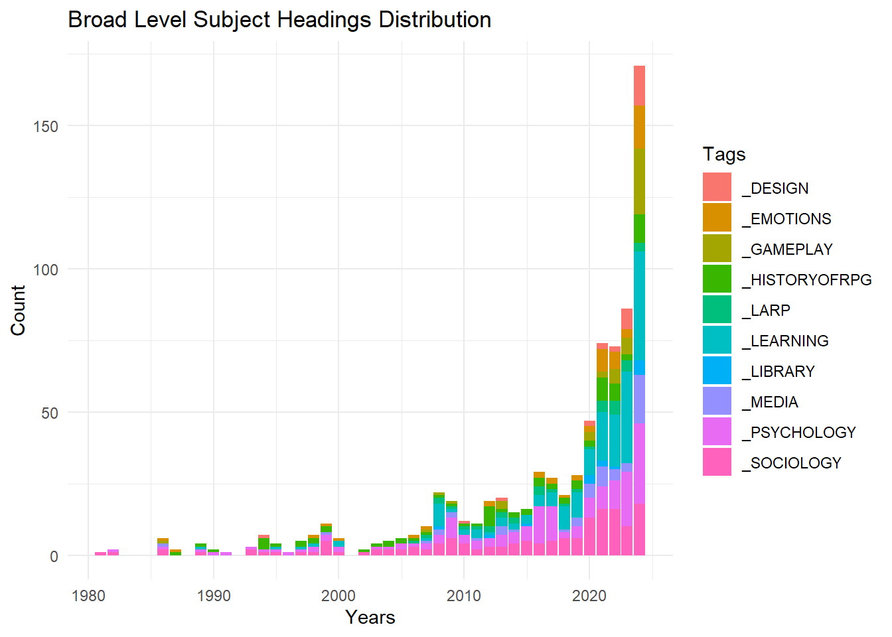
5.7.2 Specific Levels Subject Headings
The specific level allows for more precise identification of disciplines and topics. For disciplines, this level highlights that beyond the major fields in the humanities and social sciences, there are niche interests in areas such as law, music, philosophy, and neuroscience.
Regarding research topics, several selections below reveal that certain themes are associated with specific periods, like moral panics, while others, such as psychotherapy, have garnered more recent interest.
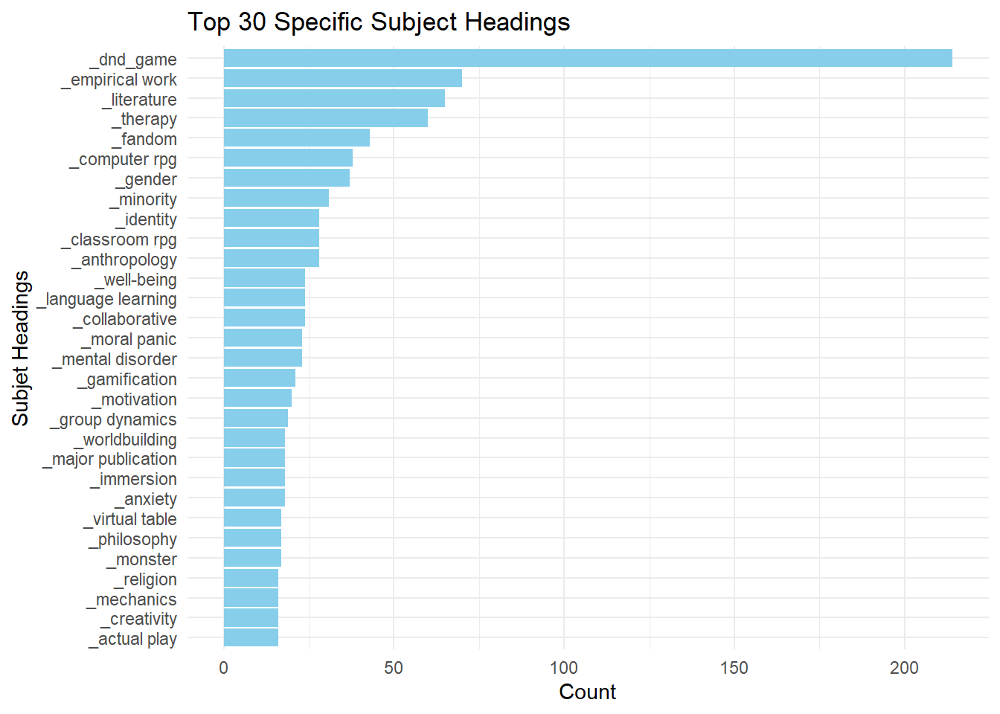
5.7.2.1 Cited Games
This level also allows us to identify games mentioned in studies. For instance, Dungeons & Dragons is by far the most frequently cited game (appearing in over 200 studies). Other games lag significantly behind, with World of Darkness games (15 studies), Call of Cthulhu (8 studies), and others following.
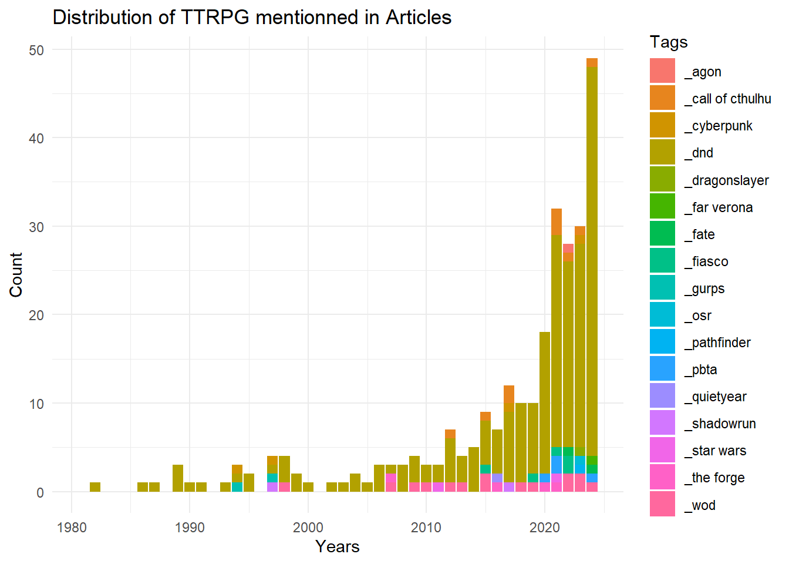
5.7.2.2 Psychotherapy
Research on the psychotherapeutic applications of tabletop role-playing games has been a rapidly growing field for several years.
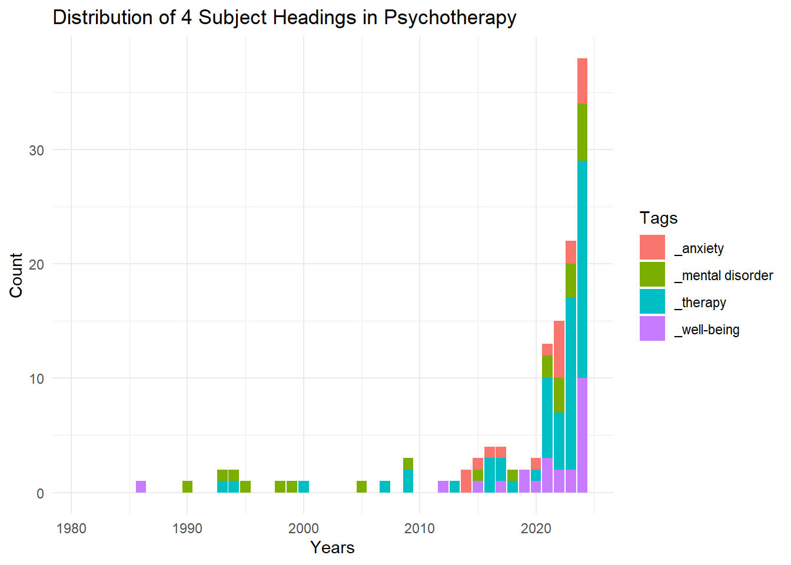
5.7.2.3 Moral Panics
Early scientific publications aimed to explain the growing popularity of this hobby (in sociology) and respond to the moral panics that marked the 1980s and 1990s in the United States (in psychology). Although not visible in the following graph, the oldest articles are debunking works in psychology, aiming to demonstrate that role-playing games have no negative impact on mental health. In contrast, more recent publications belong to fields like history or sociology and analyze the phenomenon of moral panics surrounding role-playing games.

5.7.2.4 Selected Topics in Education
Several research topics in education are of particular interest: the motivational effect of games on learners, the potential to develop a sense of self-efficacy (a positive perception of task accomplishment), second language acquisition, and the practice of social skills, such as communication, negotiation, and facilitation.
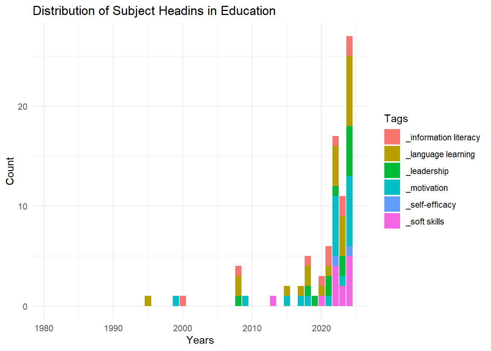
5.7.2.5 Gender, Minority, Inclusion
Over the past decade, research has focused on issues of gender and minorities, emphasizing aspects of inclusion (hospitality, belonging, etc.) and exclusion (racism, stigmatization, etc.).
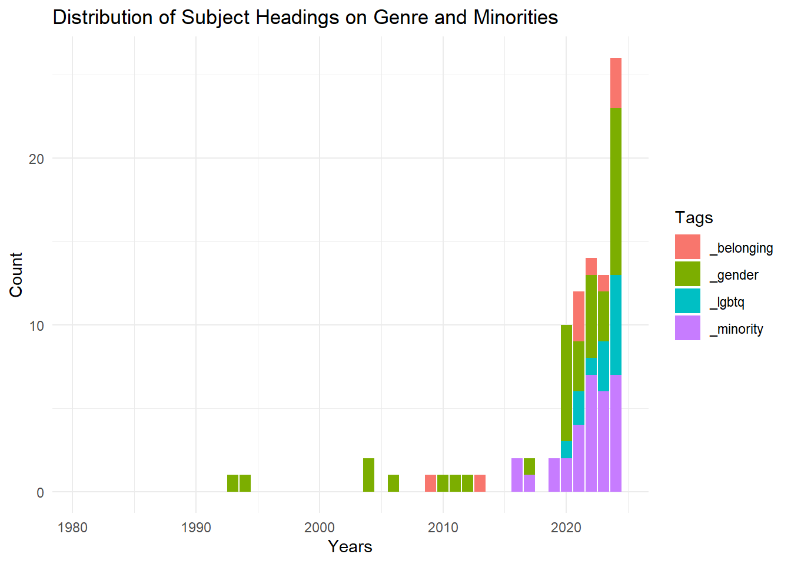
5.7.2.6 Selected Topics on Immersion
Finally, a selection of topics on immersion during gameplay also reveals research interests in escapism, distantiation, emotional bleed, and the embodiment of the gaming experience.
5.8 Recent Publication Trends
5.8.1 Reproducibility
Since the 2020s, some researchers on TTRPG have begun sharing preliminary results in preprint repositories (arXiv, PsyArXiv, OSF, etc.). They also make their datasets, methods, and source code available on platforms like GitHub, Kaggle, OSF, and Zenodo. This dissemination primarily occurs in psychology, sociology, and software engineering. Researchers using these platforms often aim to make their research results more robust and reproducible, encourage collaborations or additional reviews, or signal the focus of their research.
5.8.2 Literature Reviews
Recently, several TTRPG studies have been syntheses of other studies, indicating a maturation in the field of role-playing game research. These syntheses employ various methodologies, depending on the objectives, studies, and resources involved. The traditional “literature review” refers to an informal study that surveys existing research in a general area to provide an overview. I identified two in psychology, three in education, and one in sociology. In addition, more structured syntheses were found, such as a rapid review in psychology8 and two scoping reviews in psychology9.
Finally, there are very structured and ambitious syntheses (some even describe them as “prestigious”) known as systematic reviews or meta-analyses. I identified one article in education and one in design that claim to be systematic reviews but are merely a literature review.
There is an interesting meta-analysis that discusses role-playing in education broadly (that is, “role-playing but not tabletop”). I retained it because I found one of its conclusions noteworthy: “role-playing was by far the best type of learning activity for promoting critical thinking.”10
5.8.3 Researcher Identifiers
Researchers are increasingly using persistent identifiers, whether autonomously and voluntarily (ORCID), collaboratively (Wikidata), or through cataloging institutions (VIAF). With a superficial attempt at reconciliation11, I noted that among the 643 researchers: 285 possibly had an ORCID identifier, 153 possibly had a Wikidata identifier, and 248 possibly had a VIAF identifier.
5.8.4 Citation Graph
Articles and bibliographies on role-playing games are poorly indexed in citation graphs, or they are indexed very unevenly12. Citation graphs allow us to see other influential articles on which the research has relied. For this to be possible with this tool, the article must have a persistent identifier called a DOI, then the journal that used this DOI must have entered the associated article’s metadata, and it must have also entered all the DOIs of the cited articles in the bibliography. The latter entry is much less systematic than the entry of the descriptive metadata.
To attempt to highlight citations among role-playing game articles, I tried to reproduce the graph by inputting data into Wikidata and visualizing it in various ways.
5.8.5 Questionable Publishing Outlets
The phenomenon of “Publish or perish” has also been associated since the 2010s with the emergence of a varied and graduated set of questionable publishing outlets. Some use the term “predatory.”
Based on exclusion or warning lists created by researchers or anonymous individuals, I noted that a handful of chapters have been published in books from publishers with questionable editorial practices. Similarly, following these lists, about ten articles appear to have been published claiming peer review but without a genuine peer review process involving fair selection and arbitration by an editor. This illustrates that the niche subject of tabletop role-playing games is not immune to these harmful behaviors present in other disciplines.
5.8.6 Retractions
To my knowledge, there has been only one retraction, meaning only one article was withdrawn. Generally, an article is withdrawn for a serious scientific fault or error: data manipulation, mistakes in experimentation or analysis, plagiarism, double submission, etc.
This withdrawn study was a complete plagiarism of a previous article’s text, with changes to the authors and replacement of bibliographic references. The study was published online on February 19, 2024. I reported it to the authors of the original article on April 5, 2024. The retraction occurred on April 17, 202413. It does not appear as a withdrawn study in the Retraction Watch database, but it can be identified on the journal’s website and on Google Scholar.
6 Para-Academic Discourse
6.1 Outside Traditional Scholarly Circuits
This exploratory study focused on scientific conversation within its traditional channels of dissemination: peer-reviewed articles, theses, dissertations, monographs, conference presentations, etc. However, the reflection on tabletop role-playing games has always been an essential component of this hobby, even though it primarily occurs outside the classic dissemination channels of academic research14.
Thus, typologies and theories quickly emerged in articles published in specialized periodicals on role-playing games, such as fanzines and magazines. For instance, in the first issue of Alarums & Excursions in 1975, an article by Lee Gold, founder and editor, presents an analysis of Dungeons & Dragons, describing it as a non-zero-sum game, in contrast to Dungeons & Beaver, a pastiche that she considers a zero-sum game.15 Similarly, in 1979, several game designers shared their personal relationships with role-playing games in the first issue of Different Worlds.16 Other analytical articles would also be published in this magazine. Thus, well before 1981—when the first peer-reviewed article on role-playing games was published in the academic journal Simulation & Gaming by sociologist Gary Alan Fine—17the reflection on tabletop role-playing games was already widely disseminated in player community media.
In the 1990s, this reflection intensified with the advent of the internet and online platforms: mailing lists, forums, blogs, wikis, podcasts, streaming video channels, etc. In 1994 and 1995, there was the brief publication of a hybrid periodical in four issues dedicated to in-depth reflections on role-playing games: Interactive Fantasy: The Journal of Role-Playing and Story-Making Systems18.
Finally, around the 2000s, we note the gradual and sustainable establishment of databases indexing role-playing game references (The Acaeum19, for example) and sometimes featuring complex ontologies that rival university library management tools (e.g., Le Grog20 and RPGGeek21).
6.2 Institutional Validation
Sometimes, scholarly works published for the gaming community have been repurposed by prestigious university presses. For instance, Jon Peterson’s monograph Playing at the World, initially published independently,22 and Stu Horvath’s anthology Monsters, Aliens, and Holes in the Ground, originally published episodically as blog articles23, have been transformed into academic book editions by The MIT Press.24
Many researchers are affiliated with university departments related to game studies or film and media studies. Conferences, colloquia, or study days organized by these researchers often receive institutional funding from their affiliated universities.
Theoretical discussions, such as the GNS theory that began on the The Forge forum25, have been revisited and commented on in scientific publications.26
Special collections containing a substantial volume of tabletop role-playing games are managed by university institutions. For example, there is the Edwin and Terry Murray Collection of Role-Playing Games27 at Duke University in the United States and the Fonds patrimonial du jeu de société at Sorbonne Paris Nord Université in France.28
To my knowledge, there is currently no research chair specifically dedicated to tabletop role-playing games. Likewise, I do not believe there is a tenured professor position focused primarily on tabletop role-playing games at this time.
6.3 High-Level Reflections from Practitioners
Perhaps due to the sociology of tabletop role-playing game players, their habitus, and their preferences for intellectualization, erudition, and theorization, we can observe high-level reflections. If “role-playing is a hobby about meta discourse,” as Vivien Féasson puts it,29 then the study of role-playing could be considered an additional layer: the meta of the meta, so to speak30.
Driven by the desire to enhance the gaming experience, reflections on design and gameplay have early on taken a central place in the analysis and theorization of role-playing practices. Schools of thought and movements, along with thinkers and their followers, have always accompanied and enriched this practice.
For example, it is interesting to note that the historical recognition of gameplay innovation invented by David Wesely and Dave Arneson first emerged in forums,31 then in blog posts,32 before being relayed in monographs,33 independent documentaries,34 and finally on Wikipedia 35, ultimately achieving broader recognition. This amateur, scholarly, and documented acknowledgment has progressively allowed for the emergence of a historiography regarding the birth of role-playing games, which has nuanced a narrative that long centered solely on Gary Gygax.
More generally, the contributions of role-playing participants help to create a vast corpus of testimonies and analyses regarding gameplay, thus documenting and preserving an oral history of this hobby.
6.4 Alignment of Values with Science
In addition to intellectualism and a penchant for abstraction and erudition, other values held by role-playing participants align closely with those of academic researchers.
First of all, collegiality is an important point that highlights the fundamentally collaborative nature of role-playing games. Spaces for disseminating ideas often also serve as venues for debate. For example, forums (such as The Forge or Les Courants alternatifs) naturally encourage peer exchanges. In podcasts, guests frequently present their ideas in depth and with arguments, akin to researchers interacting with one another on university campuses. Additionally, designing and maintaining the databases mentioned earlier requires robust, sustainable teams collaborating on a technically complex object.
Role-playing culture is characterized by a strong commitment to popularizing complex concepts. The GNS theory is an emblematic example: initially abstract, it has undergone numerous clarifications and reformulations across various communication channels, making it more accessible36. This desire to make theoretical concepts practical encourages participants to adopt these theories and adapt them according to their needs.
In this regard, Johan Scipion’s work37 particularly illustrates the scientific approach to game design. His method for developing horror games, which involves repeated testing with various audiences—often more than fifty times—reflects a genuine experimental approach. His process, based on formulating and verifying design hypotheses, closely resembles the empirical methods used in the sciences.
Finally, another aspect similar to science is the commitment to open access, which translates into a willingness to share content while minimizing financial barriers for other participants. This approach aims to make knowledge and creations as accessible as possible.
6.5 Citation Practices in Tabletop Role-Playing Games
In my view, the practice of citation illustrates the connection between scientific research and role-playing games. This reflection emerged after listening to the podcast La Cellule38, which highlighted the similarities between citations in the academic world and those in the realm of role-playing. This initial observation led me to undertake an amateur study of citation practices in tabletop role-playing games as an independent researcher. Although a comprehensive analysis is planned for publication in the coming years, developments from this research are already accessible through a blog39 and micro-publications of research data40.
6.5.1 Some Preliminary Results
In tabletop role-playing game manuals, the volume of citations can sometimes be remarkably high, exceeding what one might expect from a simple game. This abundance of references resembles the practices found in academic works, where every borrowing and influence is meticulously documented.
Citation practices in role-playing games revolve around diverse and complex motivations. Ethically and professionally, they serve to acknowledge the work of others, pay tribute to significant innovations, and comply with legal frameworks like the OGL (Open Game License) or GSL (Game System License). Strategically, citations allow creators to demonstrate the multiplicity of their influences, thus avoiding association with a single source, or they may be subject to deliberate omissions or biased citations. They also serve as a means of forging connections with a community, affirming one’s belonging or camaraderie with other creators in the field. Finally, citations fulfill stylistic and intellectual objectives. For example, they may take the form of carefully crafted epigraphs or reflect erudition through numerous selected references.
As highlighted by the podcast La Cellule41, an essential function of citation in role-playing games is to identify the origin of reused game mechanics. This practice manifests at various levels of precision, from simply mentioning an author or a game to providing a detailed analysis that explains the borrowed mechanic, its adaptation, and its justification. This attribution practices of game mechanics show a particularly strong analogy with scientific citation practices. In both cases, the primary goal is to ensure traceability of ideas and innovations, allowing the reader to either deepen their understanding or verify the sources used.
In my opinion, citation practices reflect the maturity and robustness of a culture. Beyond merely preserving historical ties, they play a crucial role in recognizing the social diversity that shapes this culture, particularly by highlighting the essential contributions of minority voices42. This virtuous practice can be summarized by a simple exhortation I regularly address to my students: “Cite one another!”
7 Conclusion
Tabletop role-playing games have attracted the interest of the academic world since their emergence, with a notable increase in research since 2010. The diversity of disciplines engaging with this subject testifies to its richness as an object of study, thus bestowing growing academic legitimacy on the medium. This institutional recognition resonates with a reflective culture already present within the role-playing community, expressed through various media and discussions. Is it not this thirst for knowledge and intellectual exploration—this libido sciendi—that allows for an extension of the gaming experience beyond the table and the gameplay itself, thereby enriching the practice of this hobby?
References
Arenas, Daniel Luccas, Anna Viduani, and Renata Brasil Araujo. “Therapeutic Use of Role-Playing Game (RPG) in Mental Health: A Scoping Review.” Simulation & Gaming 53, no. 3 (2022): 285–311. https://doi.org/10.1177/10468781211073720.
Beattie, Scott. “Voicing the Shadow—Rule-playing and Roleplaying in Wraith: The Oblivion.” Law, Culture and the Humanities 3, no. 3 (2007): 477–92. https://doi.org/10.1177/1743872107081432.
Briand, Romaric, Flavie Garnier, and Fabien Hildwein. “Podcast JDR : Vade+Mecum, la critique de Fabien Hildwein (sans spoilers) !” La Cellule, 2018. https://www.lacellule.net/2018/04/podcast-jdr-vademecum-la-critique-de.html.
castiglione. “Evolution of OD&D.” Original D&D Discussion, March 28, 2008. https://odd74.proboards.com/thread/88/evolution-od.
Experice. “Fonds patrimonial du jeu de société.” Université Sorbonne Paris Nord, 2019. https://www.univ-spn.fr/fonds-patrimonial-du-jeu-de-societe/.
Féasson, Vivien. “Le jeu de rôle, loisir du méta?” In JDR’idée, une animation de la convention Orc’idée. Lausanne, 2017. https://www.youtube.com/watch?v=kcUkJ_zzH2Y.
Fine, Gary Alan. “Fantasy Games and Social Worlds. Simulation as Leisure.” Simulation & Gaming 12, no. 3, 3 (1981): 251–79. https://doi.org/10.1177/104687818101200301.
Fisher, Robert. “Dave Arneson Questions and JG Too...” Dragonsfoot, December 15, 2004. https://www.dragonsfoot.org/forums/viewtopic.php?p=136996&hilit=braunstein#p136996.
Gold, Lee. “Taintivy.” Alarums & Excursions, 1975.
Henrich, Soren, and Rachel Elizabeth Worthington. “Let Your Clients Fight Dragons: A Rapid Evidence Assessment Regarding the Therapeutic Utility of ‘Dungeons & Dragons’.” Journal of Creativity in Mental Health, 2021. https://doi.org/10.1080/15401383.2021.1987367.
Horvath, Stu. Monsters, Aliens, and Holes in the Ground. A Guide to Tabletop Roleplaying Games from D&D to Mothership. MIT Press, 2023. https://doi.org/10.7551/mitpress/14736.001.0001.
Kanterman, Leonard H., Niall Shapero, Ken St André, Steve Marsh, Marc W. Miller, Mark A. Swanson, Greg Costikyan, et al. “My Life and Role-Playing (Special Feature).” Different Worlds: The Magazine of Game Role-Playing, February 3, 1979.
Mao, Weijie, Yunhuo Cui, Ming M. Chiu, and Hao Lei. “Effects of Game-Based Learning on Students’ Critical Thinking: A Meta-Analysis.” Journal of Educational Computing Research 59, no. 8 (January 1, 2022): 1682–1708. https://doi.org/10.1177/07356331211007098.
Murray, Edwin L., and Teddy A. Murray. “Edwin and Terry Murray Collection of Role-Playing Games.” David M. Rubenstein Rare Book & Manuscript Library, Duke University, 2011. http://library.duke.edu/rubenstein/findingaids/murrayrpg/.
Peterson, Jon. Playing at the World: A History of Simulating Wars, People and Fantastic Adventures, from Chess to Role-Playing Games. San Diego, CA: Unreason Press, 2012.
———. Playing at the World: The Invention of Dungeons & Dragons. 2nd ed. Vol. 1. 2 vols. Game Histories. Cambridge, Massachusetts: The MIT Press, 2024. https://doi.org/10.7551/mitpress/15384.001.0001.
Robbins, Ben. “Braunstein: The Roots of Roleplaying Games.” ars ludi, August 6, 2008. http://arsludi.lamemage.com/index.php/104/braunstein-the-roots-of-roleplaying-games/.
Secrets of Blackmoor: The True History of Dungeons & Dragons. Documentary. The Fellowship of the Thing, 2019. https://www.kickstarter.com/projects/secretsofblackmoor/secrets-of-blackmoor-the-true-history-of-dungeons.
Siew, Zedeck. “One Way to Resist Memory Loss in a Creative Culture: CITE YOUR SOURCES ...” Tweet. Twitter, April 5, 2022. https://twitter.com/zedecksiew/status/1511187666926444546.
Torner, Evan. “RPG Theorizing by Designers and Players.” In Role-Playing Game Studies: Transmedia Foundations, edited by Sebastian Deterding and José P. Zagal, 191–212. Routledge, 2018. https://doi.org/10.4324/9781315637532-10.
White, William J. Tabletop RPG Design in Theory and Practice at the Forge, 2001–2012: Designs and Discussions. Palgrave Games in Context. Cham: Springer Nature, 2020. https://doi.org/10.1007/978-3-030-52819-5.
Yuliawati, Livia, Putri Ayu Puspieta Wardhani, and Joo Hou Ng. “A Scoping Review of Tabletop Role-Playing Game (TTRPG) as Psychological Intervention: Potential Benefits and Future Directions.” Psychology Research and Behavior Management 17 (August 1, 2024): 2885–2903. https://doi.org/10.2147/PRBM.S466664.
Footnotes
see https://github.com/pmartinolli/JDR50bibliometrie/blob/master/annexes/search-queries.txt↩︎
see https://github.com/pmartinolli/JDR50bibliometrie/blob/master/annexes/database-list.txt↩︎
University names were exported and aligned (or “reconciled”) with data from Wikidata. This reconciliation is automated using OpenRefine software. For each successful reconciliation, the country associated with the university is retrieved.↩︎
The first names of authors were extracted and aligned (or “reconciled”) with data from Wikidata. This reconciliation was initially automated using OpenRefine software. For each successful reconciliation, the gender associated with the first name is retrieved: Male, Female, or Unisex. A second manual pass was conducted afterward.↩︎
Soren Henrich and Rachel Elizabeth Worthington, “Let Your Clients Fight Dragons: A Rapid Evidence Assessment Regarding the Therapeutic Utility of ‘Dungeons & Dragons’,” Journal of Creativity in Mental Health, 2021, https://doi.org/10.1080/15401383.2021.1987367.↩︎
Livia Yuliawati, Putri Ayu Puspieta Wardhani, and Joo Hou Ng, “A Scoping Review of Tabletop Role-Playing Game (TTRPG) as Psychological Intervention: Potential Benefits and Future Directions,” Psychology Research and Behavior Management 17 (August 1, 2024): 2885–2903, https://doi.org/10.2147/PRBM.S466664; Daniel Luccas Arenas, Anna Viduani, and Renata Brasil Araujo, “Therapeutic Use of Role-Playing Game (RPG) in Mental Health: A Scoping Review,” Simulation & Gaming 53, no. 3 (2022): 285–311, https://doi.org/10.1177/10468781211073720.↩︎
Weijie Mao et al., “Effects of Game-Based Learning on Students’ Critical Thinking: A Meta-Analysis,” Journal of Educational Computing Research 59, no. 8 (January 1, 2022): 1682–1708, https://doi.org/10.1177/07356331211007098.↩︎
with an unknown proportion of false positives that may have slipped in after a single manual verification.↩︎
For example, using the tool Citationtree.org with the article https://www.citationtree.org/tree?id=10.1016/j.tsc.2012.06.002, one can see a fairly comprehensive citation graph.↩︎
https://rpggeek.com/rpgperiodical/8965/ and https://en.wikipedia.org/wiki/Interactive_Fantasy↩︎
Evan Torner, “RPG Theorizing by Designers and Players,” in Role-Playing Game Studies: Transmedia Foundations, ed. Sebastian Deterding and José P. Zagal (Routledge, 2018), 191–212, https://doi.org/10.4324/9781315637532-10.↩︎
Leonard H. Kanterman et al., “My Life and Role-Playing (Special Feature),” Different Worlds: The Magazine of Game Role-Playing, February 3, 1979.↩︎
Gary Alan Fine, “Fantasy Games and Social Worlds. Simulation as Leisure,” Simulation & Gaming 12, no. 3, 3 (1981): 251–79, https://doi.org/10.1177/104687818101200301.↩︎
https://rpggeek.com/rpgperiodical/8965/ and https://en.wikipedia.org/wiki/Interactive_Fantasy↩︎
The Acaeum, since 1999 at https://www.acaeum.com/frontdesk/intro.html, provides scholarly references for collectors of early editions of Dungeons & Dragons.↩︎
Guide du Rôliste Galactique, since 2000 at https://www.legrog.org/.↩︎
RPGGeek, since 2000 at https://rpggeek.com/.↩︎
Jon Peterson, Playing at the World: A History of Simulating Wars, People and Fantastic Adventures, from Chess to Role-Playing Games (San Diego, CA: Unreason Press, 2012).↩︎
Blog Unwinnable https://unwinnable.com/2019/01/30/73260/ (2010-)↩︎
Jon Peterson, Playing at the World: The Invention of Dungeons & Dragons, 2nd ed., vol. 1, 2 vols., Game Histories (Cambridge, Massachusetts: The MIT Press, 2024), https://doi.org/10.7551/mitpress/15384.001.0001; Stu Horvath, Monsters, Aliens, and Holes in the Ground. A Guide to Tabletop Roleplaying Games from D&D to Mothership (MIT Press, 2023), https://doi.org/10.7551/mitpress/14736.001.0001.↩︎
The Forge, from 1999 to 2012.↩︎
Scott Beattie, “Voicing the Shadow—Rule-playing and Roleplaying in Wraith: The Oblivion,” Law, Culture and the Humanities 3, no. 3 (2007): 477–92, https://doi.org/10.1177/1743872107081432; William J. White, Tabletop RPG Design in Theory and Practice at the Forge, 2001–2012: Designs and Discussions, Palgrave Games in Context (Cham: Springer Nature, 2020), https://doi.org/10.1007/978-3-030-52819-5.↩︎
Edwin L. Murray and Teddy A. Murray, “Edwin and Terry Murray Collection of Role-Playing Games” (David M. Rubenstein Rare Book & Manuscript Library, Duke University, 2011), http://library.duke.edu/rubenstein/findingaids/murrayrpg/.↩︎
Experice, “Fonds patrimonial du jeu de société” (Université Sorbonne Paris Nord, 2019), https://www.univ-spn.fr/fonds-patrimonial-du-jeu-de-societe/.↩︎
Vivien Féasson, “Le jeu de rôle, loisir du méta?” in JDR’idée, une animation de la convention Orc’idée (Orc’idée 2017, Lausanne, 2017), https://www.youtube.com/watch?v=kcUkJ_zzH2Y.↩︎
The study you are currently reading could thus be seen as “the meta of the meta of the meta of role-playing.”↩︎
Robert Fisher, “Dave Arneson Questions and JG Too...” (Dragonsfoot, December 15, 2004), https://www.dragonsfoot.org/forums/viewtopic.php?p=136996&hilit=braunstein#p136996; castiglione, “Evolution of OD&D” (Original D&D Discussion, March 28, 2008), https://odd74.proboards.com/thread/88/evolution-od.↩︎
Ben Robbins, “Braunstein: The Roots of Roleplaying Games” (ars ludi, August 6, 2008), http://arsludi.lamemage.com/index.php/104/braunstein-the-roots-of-roleplaying-games/.↩︎
Secrets of Blackmoor: The True History of Dungeons & Dragons, Documentary (The Fellowship of the Thing, 2019), https://www.kickstarter.com/projects/secretsofblackmoor/secrets-of-blackmoor-the-true-history-of-dungeons.↩︎
Romaric Briand, Flavie Garnier, and Fabien Hildwein, “Podcast JDR : Vade+Mecum, la critique de Fabien Hildwein (sans spoilers) !” (La Cellule, 2018), https://www.lacellule.net/2018/04/podcast-jdr-vademecum-la-critique-de.html.↩︎
https://github.com/pmartinolli/OtSoCG et https://observablehq.com/@pascaliensis/on-the-shoulders-of-cloud-giants↩︎
Zedeck Siew, “One Way to Resist Memory Loss in a Creative Culture: CITE YOUR SOURCES ...” Tweet (Twitter, April 5, 2022), https://twitter.com/zedecksiew/status/1511187666926444546.↩︎
Reuse
CC-BY 4.0